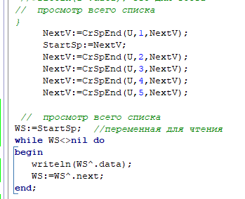
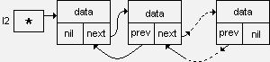

Связные списки свободны от этих ограничений. Они допускают гибкие методы доступа; извлечение (чтение) элемента из списка не приводит к удалению его из списка и потере данных. Для фактического удаления элемента из связного списка требуется специальная процедура.
По направлению связей связные списки бывают односвязными (однонаправленными) и двусвязными (двунаправленными).
По способу организации связей связные списки могут быть линейными и кольцевыми (циклическими).
Линейный односвязный список
Как следует из названия, каждый элемент такого списка содержит указатель на следующий элемент. Таким образом, тип информации элемента должен быть записью (структурой). Односвязный список можно определить с помощью описаний типов (см. пример 1).
В списке предусмотрено заглавное звено. Указатель списка (l1), значение которого - адрес заглавного звена, представляет список как единый объект.
Указатель на следующий элемент в последнем звене списка имеет значение nil (NULL).
Недостаток: По односвязному списку можно двигаться только от заглавного звена к последнему. Начинать можно с любого звена в списке, но если вдруг возникнет необходимость обратиться к предшествующим элементам, придется начинать с заглавного звена, что неудобно, нерационально и усложняет алгоритм обработки.
Для списков, кроме операций, рассмотренных ранее для очередей и стеков, существуют операции:

Добавление элемента в начало списка

Добавление элемента в конец списка
Поиск элемента в списке и вывод на экран

Использование функции поиска и вывод на экран

Вывод на экран всего списка

Линейный двусвязный список
Свободен от недостатка, присущего односвязному списку. Для этого в каждое звено добавлен еще один указатель, значение которого - адрес предыдущего звена списка. Структура списка будет выглядеть следующим образом:

Преимущества двусвязного списка:
Кольцевые списки
Если значение указателя последнего звена линейного односвязного списка заменить с nil на адрес заглавного звена, то линейный список превратится в односвязный кольцевой список.
Для двусвязного списка, кроме того, нужно заменить с nil на адрес последнего звена значение второго указателя в заглавном звене. Получится двусвязный кольцевой (циклический) список.
В односвязном кольцевом списке можно переходить от последнего звена к заглавному, а в двусвязном - еще и от заглавного к последнему.
Программа работы с двусвязным списком
var a,l1:list1;
begin
...
new(l1);
l1^.next:=nil;
a:=l1;
...
rel2=^elem2;
elem2=recordnext:rel1;
prev:rel2;
data:<Тип хранимых данных>end;
list2=rel2;
varl2:list2;
procedure insert2(pred:rel2; info:<Тип>);
varq:rel2;beginnew(q); {Создание нового звена}
q^.data:=info;
q^.next:=pred^.next;
q^.prev:=pred^.next^.prev;
pred^.next.prev:=q;
pred^.next:=qend;
procedure delete2(del:rel2);
begindel^.next^.prev:=del^.prev;
del^.prev^.next:=del^.next;
dispose(del);end;
function search2(list:rel2; info:<Тип>; var point:rel2):boolean;
varp,q:rel2;
b:boolean;beginb:=false;
point:=nil;
p:=list;
q:=p^.next;
while (p<>q) and (not b) do
beginif q^.data=info then
beginb:=true;
point:=qend;
q:=q^.nextend;
search2:=bend;
...
...
...
varl2:list2;
r:rel2;begin {Создание заглавного звена}new(r);
r^.next:=r;
r^.pred:=r;
l2:=r;
...
...
...
end.
Для двусвязного списка создание заглавного звена производится аналогично, за исключением двух указателей вместо одного.